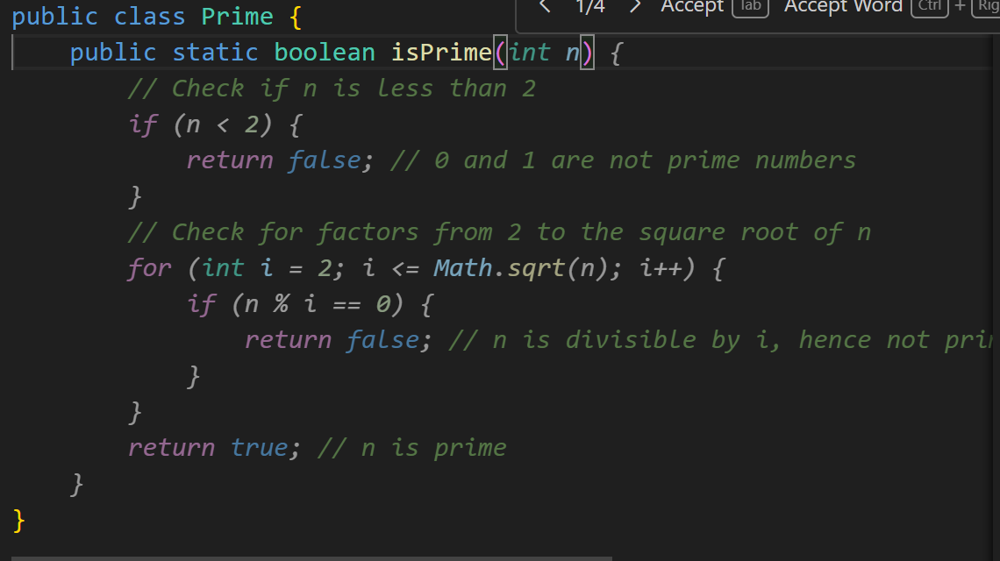
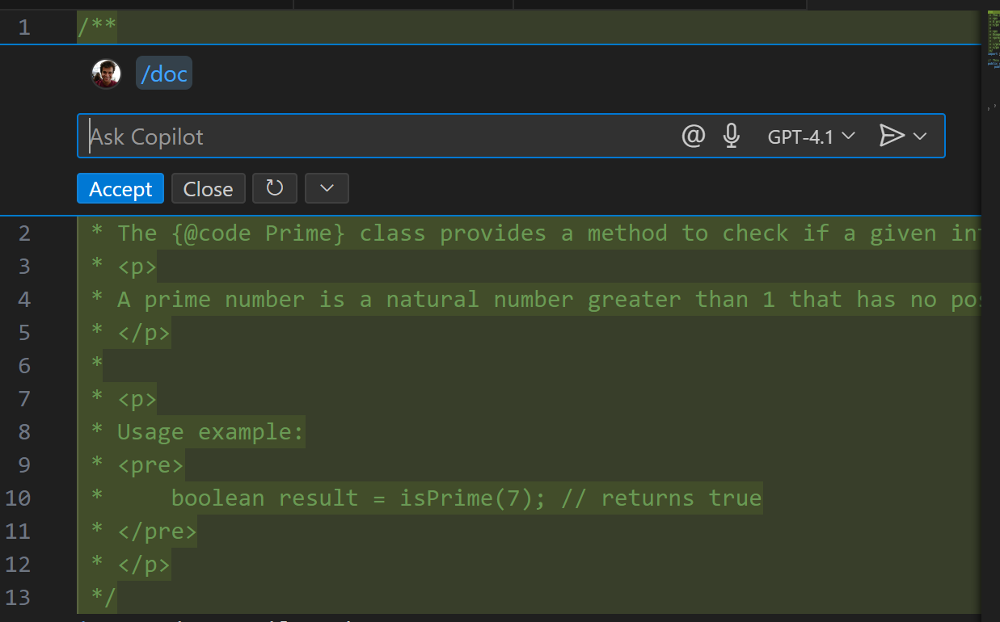

How I Use AI
Unless you live under a rock you must have heard of Artificial Intelligence (AI). It is an umbrella term for any computer program that can perform human-like intelligent tasks (eg. identifying animals) but has come to be interchangeable with Generative AI like ChatGPT.
Generative AI is, as the name suggests, any tool that “generates” output like a human would. It could be an essay, an image or code. ChatGPT was not the first Generative AI app but it’s selling point was so dead simple it became the most popular very quickly. Just ask a question in your language on anything and get an answer. This was a game changer for the industry. Overnight everyone was talking about Large Language Models (LLMs) and Generative Pre-trained Transformers (GPTs) and all that.
Now there are so many models and products built using those models that I cannot keep track of all of them. In fact anyone who follows the latest trends on LLMs is not someone you should listen to. They likely don’t build anything ahem AI consultants.
I work as a software engineer so I’m surrounded by AI at all times. Everyone at work is always talking about it. My colleagues and I generally use AI for very specific purposes that help get work done better. These are some use cases that I have personally explored.
Autocomplete
Even before ChatGPT this is where it all started with GitHub CoPilot. You could start typing and it would try to guess the rest based on the rest of your code.
So if I start typing public static boolean isPrime( it will fill up the rest of the code. Depending on the language the performance varies but the auto complete tools are getting better at understanding context.

I’ve used CoPilot and Amazon Q. I believe I could get access to Claude but I’m not too keen. Nowadays I work in C++ and I haven’t had much luck getting any AI to help me with it.
Vibe coding
Vibe coding is essentially asking AI to build an entire app for you. While I don’t think it’s possible to make large scale customer-facing apps yet with this I’ve worked on some side projects for my personal interest.
I built a small quiz app in React. I built a small payroll service with a SQLite database.
You can try the quiz app here: https://area-quiz.netlify.app/
I used ChatGPT for both. The results are not bad for a weekend project. I get a good first pass from ChatGPT. Then I can read through the code and debug wherever necessary. I think it’s great for small projects but LLMs currently have limited memories (or context windows) which cannot remember thousands of lines of code.
This is good for small-scale personal projects but if you’re dealing with sensitive data (financial, personal relationships etc.) you have to be wary of what AI outputs.
Learning
If you know one programming language you know all of them. Now with ChatGPT if I know how to do something in Java but I am working on C++ I can just copy paste my Java code and ask it to write it in C++.
Not just programming languages but if I know something can be done and I need the syntax for it I can get it done. Recently I wanted to share a video with someone over slack. But that video recorded on my phone was over 500mb. I know that I can use ffmpeg to compress it without losing much quality. So I asked chatgpt for a command to do just that and it did.
Finding better ways to do things
There has to be a better way of doing this
If you’re a programmer you must have thought this at least once in your career. This is what drives us to automate boring tasks. That’s why vim has so many keyboard shortcuts and when I’m using vim… I just ask ChatGPT what is the best way to do that.
I can do this with design too. I ask ChatGPT if I should use SQS or EventBridge for my event-driven architecture and it will give me pros and cons of both. I do this with Low Level Design as well to see which design pattern or class structure suits my requirements better.
It’s not a replacement for a senior engineer on the team but it is a good partner to have when you’re discussing design tradeoffs with your team.
Documentation
Engineers love having documentation but hate writing it. LLMs have now become decent enough that they can read some code and explain it in natural language. This is entirely backward because documentation should drive code but… I find it easier to just start coding and then document it later. Now I can just ask CoPilot or Amazon Q to add comments (Python docstring or JavaDoc) and I’m done.

That’s just some of the ways I use AI in my job on a daily basis. There’s other things I’ve tried but not had a lot of luck with like asking “what is X?” type questions. I’m better off googling it. I’ve also tried debugging by pasting the error message into the chat window but AI usually doesn’t do well there. It often gets stuck in a circle where it suggests one solution, it causes another error, then it gives another solution which brings me back to the first error. So you just gotta play by the ear. Not assume AI will have all the answers every time.
Remember all those warnings that WWE plays before every show -
Don’t try this at home. These actions are performed by professionals.
The same applies to AI. In this case I’m the professional (lol). A common theme you will notice in all the use cases is that I already know the outcome I need and I know it is possible. I can read through the code or any text output AI generates and understand what it got right and what it didn’t.
Not to say I’m some genius. Anyone with a little practice can figure it out. It’s not impossible. Code is generally very structured and readable (I wish) but you should not blindly trust LLMs.
LLMs simply repackage what they have read elsewhere on the web. So it might be outdated or even completely wrong. Always verify with official docs and thorough testing before going with something an LLM suggested.